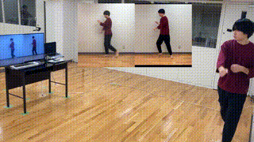

Dance Practice System that Shows What You Would Look Like if You Could Master the Dance
Shuhei Tsuchida, Hideaki Okamoto, Yuma Suzuki, Rintaro Kanada, Takayuki Hori, Tsutomu Terada, Masahiko Tsukamoto

Abstract
This study proposes a dance practice system allowing users to learn dancing by watching videos in which they have mastered the movements of a professional dancer. Video self-modeling, which encourages learners to improve their behavior by watching videos of exemplary behavior by themselves, effectively teaches movement skills. However, creating an ideal dance movement video is time-consuming and tedious for learners. To solve this problem, we utilize a video generation technique based on deepfake to automatically generate a video of the learners dancing the same movement as the dancer in the reference video.
Shuhei Tsuchida, Haomin Mao, Hideaki Okamoto, Yuma Suzuki, Rintaro Kanada, Takayuki Hori, Tsutomu Terada, and Masahiko Tsukamoto. 2022. Dance Practice System that Shows What You Would Look Like if You Could Master the Dance. In Proceedings of the 8th International Conference on Movement and Computing (MOCO '22). Association for Computing Machinery, New York, NY, USA, Article 15, 1–8. https://doi.org/10.1145/3537972.3537991